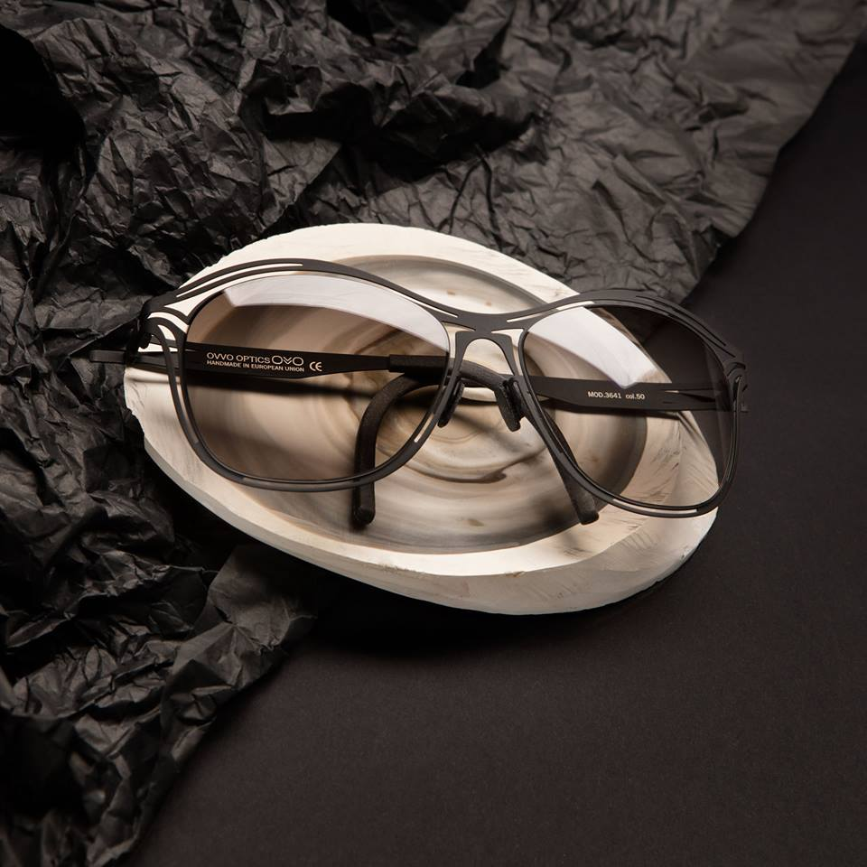

In redefining your eyewear selection experience, it is everything to us in how you see the world and how you feel wearing a style that best expresses your individuality. With our independent and diverse collection we style and fit you professionally. Because your time is so precious we in this fast pace world, we bring the eyewear boutique to you. Our collections are hand picked with quality, design and fashion in mind for our clients. Branding and advertising for manufacturers is not our course.
Our lens design portfolio and relationship with our lab are truly something we are proud of and as a team we take pride in our craft.
With a keen eye for eyewear fashion and over 24 years of optical experience, I am excited to have founded Framed by tone, LLC - “your redefined eyewear concierge”. Coupled with my approach to designing and curating exclusive collections, I take joy and pride when clients feel drawn with confidence that they will receive world class service and I excel in meeting their needs. Finding that perfect piece of ART to compliment their unique personality, keeping them fashionably ahead of the curve, and see them glow with confidence and pride. This is my passion and my craft. In my free time I enjoy biking and hiking with my better half when at all possible. We always look forward to enjoying our city with its hidden wonders and visiting vineyards when at all possible.
With most eyeglasses being made and distributed by just a few giant companies, their monopoly is rapidly eliminating the general public's choices. Framed by Tone is taking a stand. As you select the perfect pair from us know that you are supporting small independent shops.
Stocking over 300 hand selected frames in Phase I of our shop, we have been supported with open arms by vendors from around the world. We are able to curate a selection of frame pieces that cater to every fit, taste, and prescription need.
Every pair of glasses is thoughtfully fabricated with an experienced optician. With prior adjustments to the frame and numerous measurements to ensure accuracy, we interpret both functional and aesthetic variables to produce the finest quality eyewear for you.
The brand was born in 2005 in Barcelona and the city is in its DNA. Full of contrasts in perfect balance, home to historic buildings and avant-garde architecture, Barcelona has inspired every one of our shapes and innovative colours.
With all Zen designs designed and created entirely in Barcelona by our team of designers, its process takes typically about six months and results in a one-of-a-kind frame that reflects our way of understanding eyewear and what our clients want: special and unique designs true to who they are as unique individuals.
 OVVO has been present in the U.S. since March 2011. Its history, however, goes back to Europe of the Cold War era. That’s when a group of scientists, who were working on developing a material for spacecraft and military use, fused surgical steel and titanium, achieving an exceptionally light, durable and flexible material that is also hypoallergenic. Inspired by its remarkable qualities, in 1980 the engineers of the company started using this unique composite to make frames for glasses. They are handmade, but manufactured with outstanding precision, mastered by over 30 years of experience. Entirely produced in Germany and Poland, OVVO frames bring exquisite European style and unmatched quality.
Weighing barely 0.6 ounces OVVO frames offer unparalleled comfort and unfailing durability. Tests showed that stretched flat frames can hold up to 90 pounds without breaking or wrecking. Virtually indestructible and highly flexible is also OVVO Optics-patented screw-free hinge that can withstand more than 300,000 rotations (an equivalent of 205 years of usage) and reveal no changes in structure or appearance.
OVVO Optics’ eyewear is 100% manufactured in family-owned plants in Europe, where each frame goes through 65-85 steps before it is complete. First, using German engineered laser technology the frames are cut out from raw steel sheets imported from Sweden. Then, they pass through the various stages of hand-manufacturing. With great precision and attention to detail the frames are hand-polished, painted, decorated and assembled by a crew of 250 dedicated eyewear production experts. At each phase, they are inspected with care for highest quality assurance.
The end product is a flawless piece of art, sophisticated, comfortable, durable and flexible.
Optician, trained during several years in designer oriented stores, Caroline Abram started in 1998 designing jewels and accessories for the eyewear market: Lorgnettes, magnifying glasses, chains etc... It is reviving the not well known object called the lorgnette, that she quickly met an international success.
“CAROLINE ABRAM'S COLLECTIONS ARE INTENDED FOR ALL THE WOMEN WHO WANTED TO FEEL BEAUTIFUL, SENSUAL, OR JUST THEMSELVES.”
Rewarded by two gold Silmo awards, the Filao company opened its workshops of craft manufacturing in Dakar where Caroline spent her childhood. She trained a women's team there, which have been manufacturing for 15 years, all her accessory lines. Caroline Abram uses diverse materials such as resin, the silver, wood, semiprecious stone...
During her journeys she discovers the charms of Florida and in 2008, she launched her own line of glasses reminding her of the old-fashioned charm of Miami. Sixties and vintage, South Beach inspired Caroline: the cat-eyes, colors, extreme femininity.
“CAROLINE CREATES THE ADDICTION, THE DESIRE TO POSSESS THEM IN ALL THE COLORS, TO COORDINATE THEM WITH THEIR BAGS AND SHOES.”
After being asked so often be her customers “Do you make the same for children?”, it became obvious when the moment had come, in 2014 to (launch) the «Tête à Lunettes». The line was rewarded its first year for the Silmo award for best kids design.
A valid prescription signed by a licensed eyecare provider and is not expired. Depending on local and state laws, your prescription may be considered valid between 1-2 years from the date of examination.
Orders are processed Monday through Friday, excluding US holidays. Orders placed on weekends or holidays, will be processed the following business day. Order processing time varies depending on the type of lenses ordered, the availability of product and our inspection process. *We abide by ANSI spectacle Lens Guidelines*
Please use this as a general guide for processing times:
For a quick clean, blow loose particles off your frames first, and then clean with the microfiber cloth provided with your glasses.
For a deep clean, add a drop of liquid dish soap (moisturizer-free) to a bowl of water big enough to submerge your frames. Soak for a few minutes, then wipe clean with a premium soft cloth (cheap paper towels or tissue paper can contain wood fibers that may scratch your lenses).